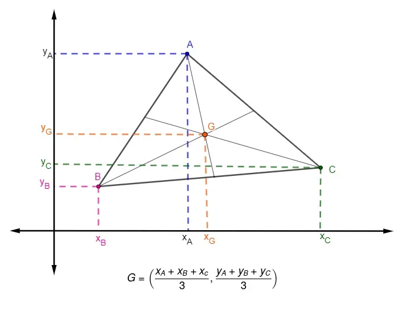
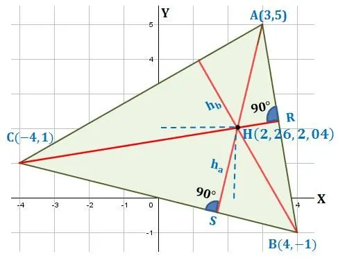
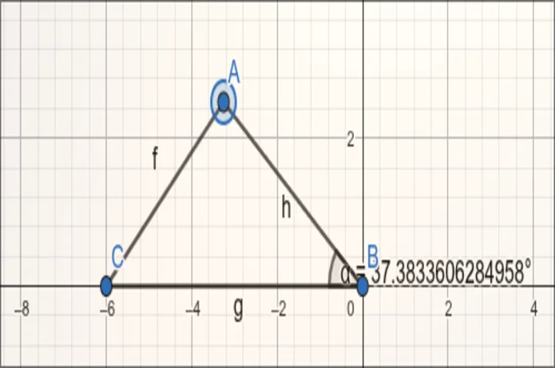
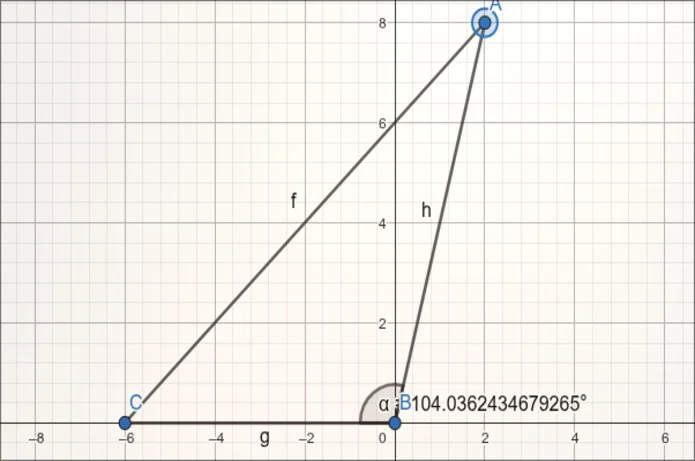
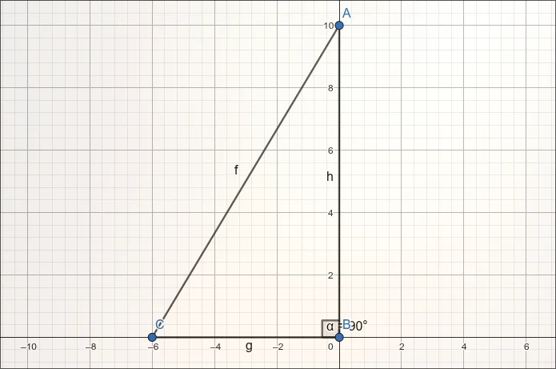
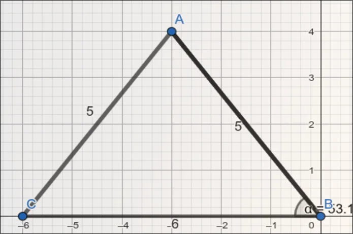
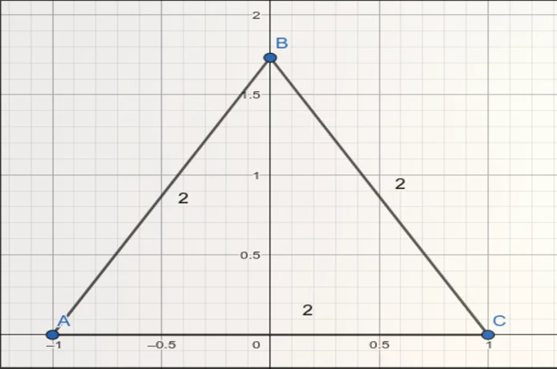
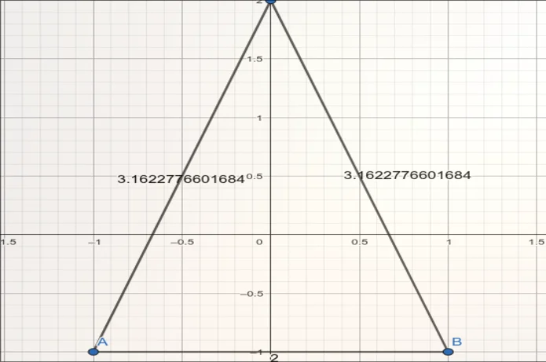

Área do Triângulo por Coordenadas
Se conhecemos os vértices A(x₁, y₁), B(x₂, y₂) e C(x₃, y₃) no plano cartesiano, calcular a área dessa figura fica bem simples. Não precisamos medir segmentos ou ângulos internos — basta usar os pares ordenados de cada canto.
Como calcular
O cálculo matemático utiliza a ideia de determinante de uma matriz 3×3:
A superfície total é dada pela metade do módulo de:
½ · |x₁(y₂ - y₃) + x₂(y₃ - y₁) + x₃(y₁ - y₂)|
O uso do valor absoluto serve para eliminar resultados negativos. Assim, a ordem com que listamos os pontos no sistema não altera o resultado final.
Exemplo prático
Imagine um polígono com vértices em A(0, 0), B(4, 0) e C(0, 3):
½ · |0(0 - 3) + 4(3 - 0) + 0(0 - 0)| = ½ · |12| = 6 unidades²
Pontos Notáveis do Triângulo
Cruzamentos de linhas especiais geram os chamados pontos notáveis. Usando a matemática analítica, conseguimos achar a posição espacial exata de cada um deles de forma direta.
Baricentro
O baricentro surge do encontro das medianas da figura. Essas linhas unem cada quina ao ponto médio da borda oposta. Ele funciona como o centro de gravidade do desenho.
Com os três pontos cartesianos conhecidos, determinamos a posição G através da média aritmética simples:
G = ((x₁ + x₂ + x₃) / 3, (y₁ + y₂ + y₃) / 3)
Exemplo prático: Se os cantos forem A(0, 0), B(6, 0) e C(0, 6), o centro de massa será G(2, 2).

Circuncentro
O circuncentro nasce no cruzamento das mediatrizes. Elas são linhas retas que dividem o meio de cada borda fazendo um ângulo de 90 graus. Esse local marca o ponto central do círculo que envolve a forma por fora.
Para achá-lo, montamos um sistema matemático combinando duas dessas retas perpendiculares. A resposta final pode se situar na parte interna, externa ou exatamente sobre o traçado do polígono.

Ortocentro
O ortocentro representa a junção das três alturas do polígono. Alturas são trajetos que partem de uma quina e atingem a base oposta de maneira perpendicular.
O processo para localizá-lo é similar ao anterior: resolvemos um sistema unindo duas dessas equações de retas. Sua localização muda conforme os ângulos: fica por dentro nos acutângulos, fora nos obtusângulos e em cima do canto reto nos retângulos.

Classificação do Triângulo por Coordenadas
Sabendo as posições cartesianas, conseguimos categorizar qualquer formato de três pontas. Usamos apenas a regra clássica de distância espacial:
d = √((x₂ - x₁)² + (y₂ - y₁)²)
Quanto aos lados
Análise das arestas após descobrir o comprimento dos três caminhos:
- Três medidas idênticas → Equilátero
- Duas medidas iguais → Isósceles
- Todos os tamanhos distintos → Escaleno
Quanto aos ângulos
Ao descobrir os tamanhos das três linhas principais (a, b e c), aplicamos um teste inspirado em Pitágoras:
- Se a² + b² = c² → Retângulo
- Se a² + b² > c² → Acutângulo
- Se a² + b² < c² → Obtusângulo
Exemplo claro: Para os pontos A(0, 0), B(3, 0) e C(0, 4), os caminhos medem 3, 4 e 5 unidades. Como 3² + 4² resulta em 5², temos uma forma retangular e escalena.
Galeria de Imagens geradas no Geogebra






{kind=link}